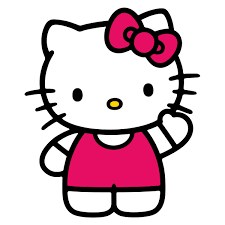
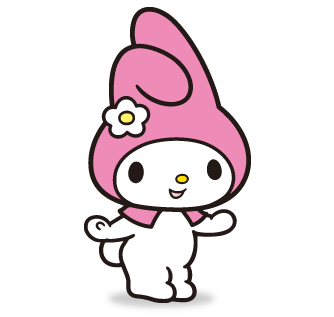
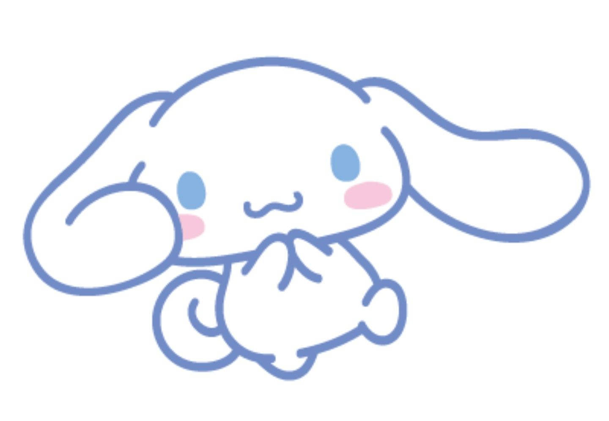
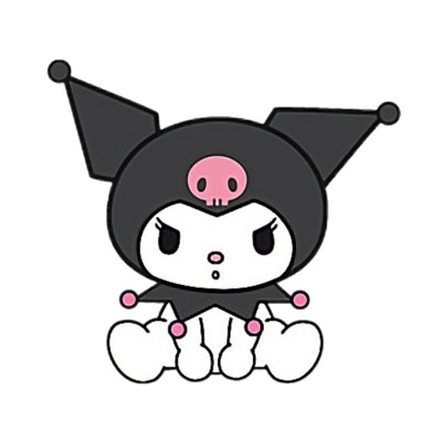

Hello Kitty
Hello Kitty is a cheerful and kind-hearted girl who loves to bake cookies and play the piano. She was born on November 1st and is close to her twin sister, Mimmy.

My Melody
My Melody is a sweet little girl who wears a hood that her grandmother made. She loves almond pound cake and often hangs out with her best friend, Flat.

Cinnamoroll
Cinnamoroll is a shy, white puppy with long ears that let him fly. He was born on March 6th and works as the official mascot of a café.

Kuromi
Kuromi may look tough, but she has a soft spot for romantic stories. She wears a black jester's hat with a pink skull on it and often gets into mischief.

Pompompurin
Pompompurin is a laid-back golden retriever who loves to collect shoes and spend time with his best friends, Muffin and Scone.